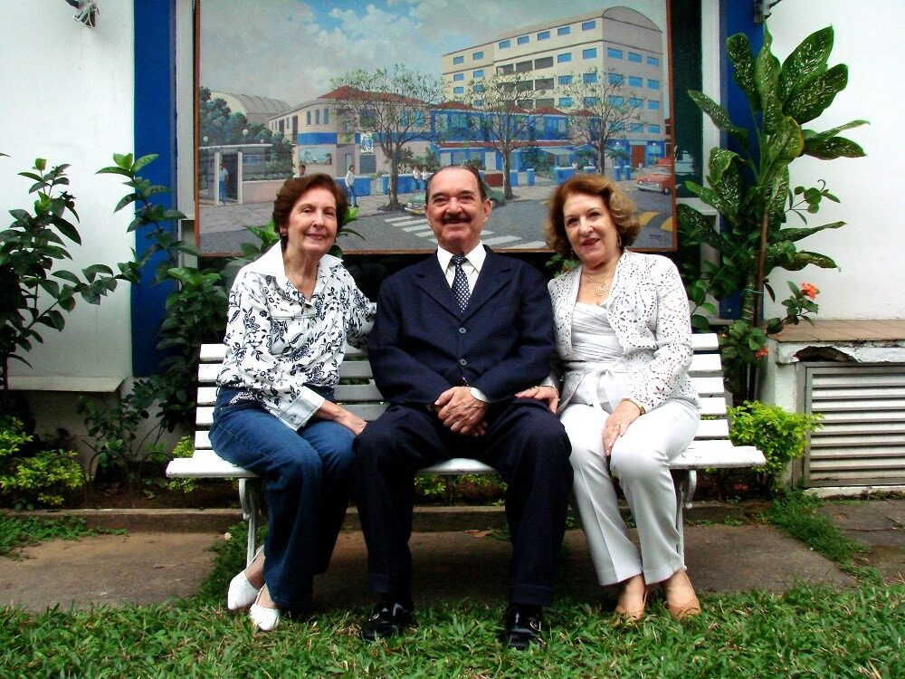
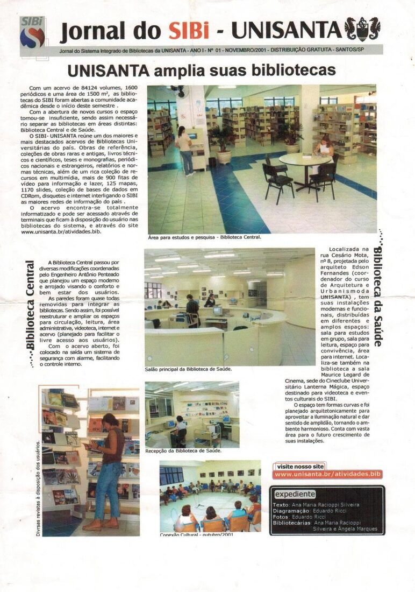
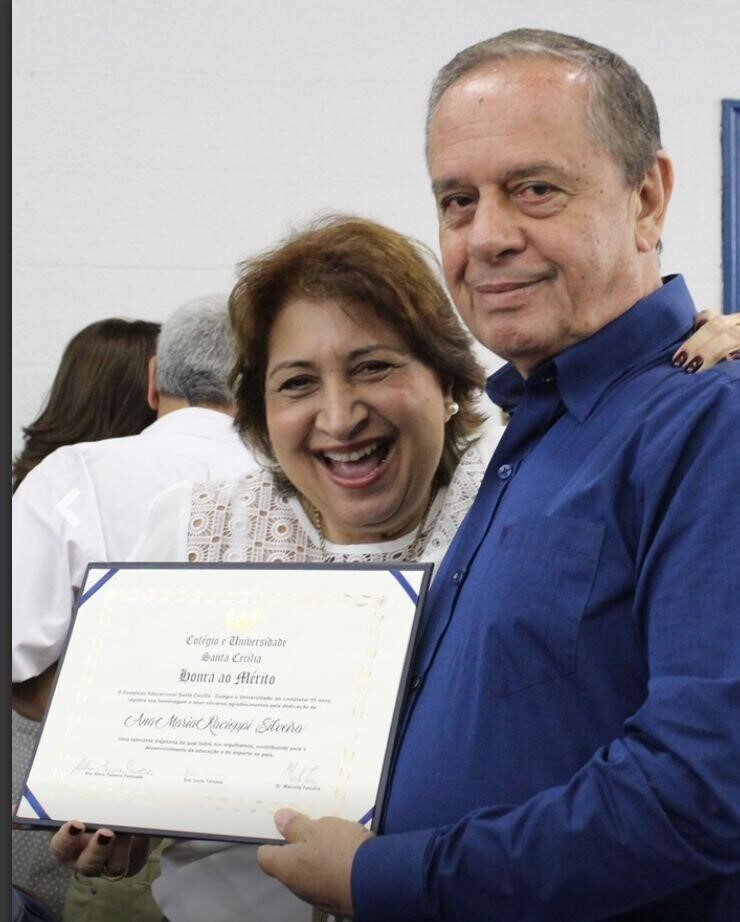

A Trajetória das Bibliotecas da Unisanta
Um legado de conhecimento e inovação nos 65 anos da universidade
Em 2026, a Universidade Santa Cecília celebra 65 anos de história, dedicação e transformação. Esta linha do tempo reúne os principais marcos das Bibliotecas que acompanharam e impulsionaram o crescimento acadêmico e cultural da instituição, das primeiras doações de livros em 1961 até o sistema híbrido e digital de hoje.

Dez marcos de uma trajetória de 65 anos
Clique em cada card para ver fotos e documentos originais do acervo histórico da Unisanta.
Use as setas do teclado ← → para navegar dentro de cada janela · ESC para fechar
SIBI
Integração e modernizaçãoA criação do Sistema Integrado de Bibliotecas e as transformações que consolidaram um sistema híbrido e inovador.
Saiba mais48 Anos de Dedicação
Ana Maria Raccioppi SilveiraConheça a trajetória inspiradora de Ana Maria e sua contribuição inestimável para as bibliotecas da Unisanta.
Conhecer históriaNossos Espaços
Prédios que contam históriasConheça os prédios que abrigaram e ainda abrigam nossas bibliotecas ao longo desses 65 anos.
Ver espaçosGaleria
Memórias em imagensExplore momentos marcantes registrados nas bibliotecas e na vida da Universidade.
Ver galeriaEquipe
Funcionários e Ex-FuncionáriosUma homenagem às muitas mãos que construíram a trajetória do Sistema Integrado de Bibliotecas.
Saiba mais
O Sistema Integrado de Bibliotecas
O ano de 2001 foi um divisor de águas: o lançamento do Jornal do SIBI — UNISANTA anunciou a ampliação e a consolidação do Sistema Integrado de Bibliotecas, que já reunia 84.124 volumes, 1.600 periódicos e uma área de 1.500 m² distribuída entre a Biblioteca Central e a Biblioteca da Saúde.
O acervo já se encontrava totalmente informatizado, acessível por terminais e pela internet — a materialização de um esforço de modernização iniciado ainda em 1997, com a implantação do software WINISIS.
- 1998 Inauguração do Edifício Arquiteto Aníbal Martins Clemente, sede da Biblioteca Central.
- 2000 Inauguração da Biblioteca da Saúde, projetada pelo arquiteto Edson Fernandes, sede também do Cineclube Lanterna Mágica.
- 2011 Certificação da equipe no sistema BNweb e implantação da biometria para identificação de usuários.
Ana Maria Raccioppi Silveira
"48 anos de dedicação à Unisanta (1977–2025)."
A história das Bibliotecas da Unisanta é intrinsecamente ligada à trajetória de Ana Maria Raccioppi Silveira. Sua visão e liderança, ao longo de quase cinco décadas, foram cruciais para o desenvolvimento, a modernização e a expansão dos serviços bibliotecários — da transição do acervo físico para o digital até a criação do SIBI.
- 1989 Acompanhou a construção do Bloco M e a consolidação das Bibliotecas Martins Fontes e do Direito.
- 1998 Viu a inauguração do Edifício Aníbal Martins Clemente, nova sede da Biblioteca Central.
- 2001 Liderou a transição para o SIBI, integrando todos os espaços físicos e digitais.
- 2016 Recebeu o Diploma de Honra ao Mérito, nas celebrações dos 55 anos do Complexo Educacional Santa Cecília.

Os prédios que contam a história
Cada endereço representa um capítulo da trajetória institucional das bibliotecas.
| Período | Prédio / Espaço | Função | Significado |
|---|---|---|---|
| 1961 | Avenida Rodrigues Alves, 332 | Primeira sede da Escola Santa Cecília | Local onde tudo começou |
| 1966 | Rua Luiz de Camões, 22 | Transferência do Ginásio Santa Cecília | Primeiro grande espaço institucional |
| 1969 | Oswaldo Cruz, 266 | Unidade do Colégio Santa Cecília | Prédio que deu origem à futura Unisanta |
| 1973 | Fundações do Bloco C | Expansão estrutural | Planejamento de longo prazo |
| 1989 | Bloco M | Bibliotecas Martins Fontes e do Direito | Consolidação das bibliotecas em espaço próprio |
| 1998 | Edifício Aníbal Martins Clemente | Biblioteca Central | Marco da modernização física |
| 2001 | Biblioteca da Saúde (proj. Edson Fernandes) | Biblioteca setorial com Cineclube | Especialização e descentralização |
Colaboradores e Ex-colaboradores do SIBI
Uma homenagem às muitas mãos que construíram a trajetória do Sistema Integrado de Bibliotecas — bibliotecários e auxiliares registrados ao longo dos anos.
Bibliotecários do SIBI
Homenagem
Coordenação atual
Equipe de bibliotecários(as)
Auxiliares de Biblioteca
Memórias em imagens
Um recorte do acervo histórico da Unisanta e do jornal A Tribuna, reunido no e-book comemorativo dos 65 anos.